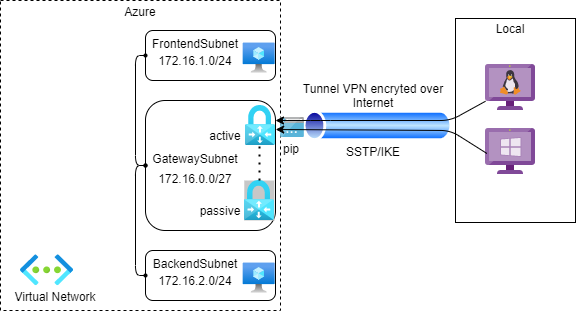

A virtual private network (VPN) is a type of private interconnected network.
VPNs are typically deployed to connect two or more trusted private networks to one another over an untrusted network (over the Internet).
Traffic is encrypted while traveling over the untrusted network to prevent eavesdropping or other attacks.
You may consider three types of gateway below when designing your hybrid network:
- Point-to-site (P2S) VPN: allows client computers in local to connect remotely to your network in Azure using IPSec/OpenVPN/SSTP protocols
- Site-to-site (S2S) VPN: connect your on-premises networks to Azure through dedicated VPN devices or connect multiple virtual networks in Azure together. Protocols supported: IPSec/IKE
- Azure ExpressRoute: connect your on-premises networks to Azure over a private network. It means that your traffic will be not travel over the Internet.
In this first part, we will discuss the Point-to-Site VPN.

Part 2 (Site-to-Site VPN) available here.
Introduction
Point-to-Site VPN lets you connect from a single computer from anywhere to anything located in your virtual network.
As part of the Point-to-Site configuration, you install a certificate and a VPN client configuration package, which contains the settings that allow your computer to connect to any virtual machine or role instance within the virtual network. It’s great when you want to connect to a virtual network, but aren’t located on-premises.
Here are some characteristics of this type VPN:
| Point to site | |
|---|---|
| Azure supported services | Cloud services and VMs |
| Typical bandwidth | Depends on VPN Gateway SKU |
| Protocols supported | SSTP, OpenVPN and IPsec |
| Routing | RouteBased (dynamic) |
| Connection resiliency | Active-passive |
| Use case | Secure access to Azure virtual networks for remote users |
| Pricing | Pricing |
By default, this VPN gateway is deployed as two instances in an active/passive configuration, even if you only see one VPN gateway resource in Azure.
When planned maintenance or unplanned disruption affects the active instance, the passive instance automatically assumes responsibility for connections without any user intervention.
If you need a HA configuration, you may consider an active/active VPN configuration supported by Site-to-Site VPN or Azure ExpressRoute.
Schema
Provision the Azure resources using Terraform
-
main.tf: create a virtual network, three subnets and a virtual network gateway
-
vm.tf: create two virtual machines located in FrontendSubnet and BackendSubnet. We will test the connection to these vms from the local computer once the VPN is configured.
Create certificates for VPN authentication:
In order for VPN connections from your local computer to be authenticated to access your virtual network in Azure, you must create two certificates: a root certificate which will be declared to your virtual network gateway in Azure, and a client certificate stored in your local computer which will be signed with the root certificate.
Windows:
- Create the self-signed root certificate using Powershell:
$cert = New-SelfSignedCertificate -Type Custom -KeySpec Signature `
-Subject "CN=P2SRootCert" -KeyExportPolicy Exportable `
-HashAlgorithm sha256 -KeyLength 2048 `
-CertStoreLocation "Cert:\CurrentUser\My" -KeyUsageProperty Sign -KeyUsage CertSign
Open Certificate Manager (certmgr), go to Personal > Certificates. Select P2SRootCert certificate and then export it on .CER format (without private key). Name this file as P2SRootCert.cer
Open the certificat P2SRootCert.cer with a text editor and save the key between “—–BEGIN CERTIFICATE—–” and “—–END CERTIFICATE—–”.
This is your public data of root certificate encoded on base64. You need to declare it later to your Azure VPN gateway configuration.
- Generate a client certificate signed by your new root certificate using Powershell:
New-SelfSignedCertificate -Type Custom -DnsName P2SChildCert -KeySpec Signature `
-Subject "CN=P2SChildCert" -KeyExportPolicy Exportable `
-HashAlgorithm sha256 -KeyLength 2048 `
-CertStoreLocation "Cert:\CurrentUser\My" `
-Signer $cert -TextExtension @("2.5.29.37={text}1.3.6.1.5.5.7.3.2")
The VPN client installed on your local computer will use this certificate to authenticate its connection to your virtual network in Azure.
Linux:
Configure P2S Linux using StrongSwan
You can follow the steps below to install a VPN client on a Ubuntu machine.
- Install strongwan utilities:
sudo apt install strongswan strongswan-pki libstrongswan-extra-plugins curl libxml2-utils cifs-utils
- Create certificates for VPN authentication: a root certificate and a client certificate signed by the root certificate
rootCertName="P2SRootCertLinux"
username="linux"
password="[YOUR_PASSWORD]"
mkdir temp
cd temp
sudo ipsec pki --gen --outform pem > rootKey.pem
sudo ipsec pki --self --in rootKey.pem --dn "CN=$rootCertName" --ca --outform pem > rootCert.pem
rootCertificate=$(openssl x509 -in rootCert.pem -outform der | base64 -w0 ; echo)
echo $rootCertificate
sudo ipsec pki --gen --size 4096 --outform pem > "clientKey.pem"
sudo ipsec pki --pub --in "clientKey.pem" | \
sudo ipsec pki \
--issue \
--cacert rootCert.pem \
--cakey rootKey.pem \
--dn "CN=$username" \
--san $username \
--flag clientAuth \
--outform pem > "clientCert.pem"
openssl pkcs12 -in "clientCert.pem" -inkey "clientKey.pem" -certfile rootCert.pem -export -out "client.p12" -password "pass:$password"
Save the root certificate content. You need to declare it to your virtual gateway in Azure.
- Configure the VPN client: replace the placeholder [YOUR_PASSWORD] and run the following script
username="linux"
password="[YOUR_PASSWORD]"
ipsecconfig="/etc/ipsec.conf"
# These values will be found in Generic/VpnSettings.xml of vpn configuration downloaded from Azure Portal
vpnServer="[VpnServer]"
vpnType="[VpnType]"
routes="[Routes]"
# Backup current config
sudo cp $ipsecconfig "/etc/ipsec.conf.backup"
# Copy VPN certificates
sudo cp "Generic/VpnServerRoot.cer" "/etc/ipsec.d/cacerts"
sudo cp "temp/${username}.p12" "/etc/ipsec.d/private"
# Update ipsec.conf to create a connection to Azure
echo -e "\nconn azure" | sudo tee -a $ipsecconfig > /dev/null
echo -e "\tkeyexchange=$vpnType" | sudo tee -a $ipsecconfig > /dev/null
echo -e "\ttype=tunnel" | sudo tee -a $ipsecconfig > /dev/null
echo -e "\tleftfirewall=yes" | sudo tee -a $ipsecconfig > /dev/null
echo -e "\tleft=%any" | sudo tee -a $ipsecconfig > /dev/null
echo -e "\tleftauth=eap-tls" | sudo tee -a $ipsecconfig > /dev/null
echo -e "\tleftid=%client" | sudo tee -a $ipsecconfig > /dev/null
echo -e "\tright=$vpnServer" | sudo tee -a $ipsecconfig > /dev/null
echo -e "\trightid=%$vpnServer" | sudo tee -a $ipsecconfig > /dev/null
echo -e "\trightsubnet=$routes" | sudo tee -a $ipsecconfig > /dev/null
echo -e "\tleftsourceip=%config" | sudo tee -a $ipsecconfig > /dev/null
echo -e "\tauto=add" | sudo tee -a $ipsecconfig > /dev/null
echo ": P12 client.p12 '$password'" | sudo tee -a "/etc/ipsec.secrets" > /dev/null
Declare the root certificates to your virtual network gateway in Azure:
You can update Terraform code to include these certificates.
Test VPN connection
The virtual network gateway can take up to 30 minutes to be provisioned. When it’s finished, you can download VPN Client from Azure Portal to be able to connect to Azure from your local computer.
- Address pool: 10.2.0.0/24
- Tunnel type: IKEv2
- Root certificates: PS2RootCert (client Windows), PS2RootCertUbuntu (client Ubuntu)
- Allocated IP addresses: private ip allocated from address pool above for each client
Windows:
For Windows computer, you can install a VPN client by running the program located in WindowsAmd64 (Windows 64 bits) or WindowsX86 (Windows 32 bits).
Once the VPN client is installed on your local computer, go to VPN settings of your computer and select your vnet name and then select Connect.
Now, you are connected successfully to Azure and you are allocated an ip 10.2.0.2. This ip come from the address pool 10.2.0.0/24 that you configured earlier in your configuration.
You can test the connection from this endpoint to your vms located in FrontendSubnet (172.16.1.4) and BackendSubnet (172.16.2.4) on your network.
Ubuntu:
- Update IPSec configuration:
Locate the IPSec configuration at /etc/ipsec.conf and replace the value of four fields: tkeyexchange, right, rightid and rightsubnet by the values found in Generic/VpnSettings.xml downloaded from Azure Portal.
- tkeyexchange = [VpnType]
- right = [VpnServer]
- rightid = %[VpnServer]
- rightsubnet = [Routes]
The final configuration of this file look like that:
- Start ipsec services:
sudo ipsec restart
sudo ipsec up azure
The connection should be established successfully to Azure and then you should be able to ping and connect to your virtual machines from your local computer.
Congratulations! Your point-to-site VPN has been configured successfully! 😊
Part 2 (Site-to-Site VPN) available: here
References
- VPN Gateways: https://docs.microsoft.com/en-us/azure/vpn-gateway/vpn-gateway-about-vpngateways
- VPN FAQ: https://docs.microsoft.com/en-us/azure/vpn-gateway/vpn-gateway-vpn-faq
- Configure P2S VPN on Linux: https://docs.microsoft.com/en-us/azure/storage/files/storage-files-configure-p2s-vpn-linux